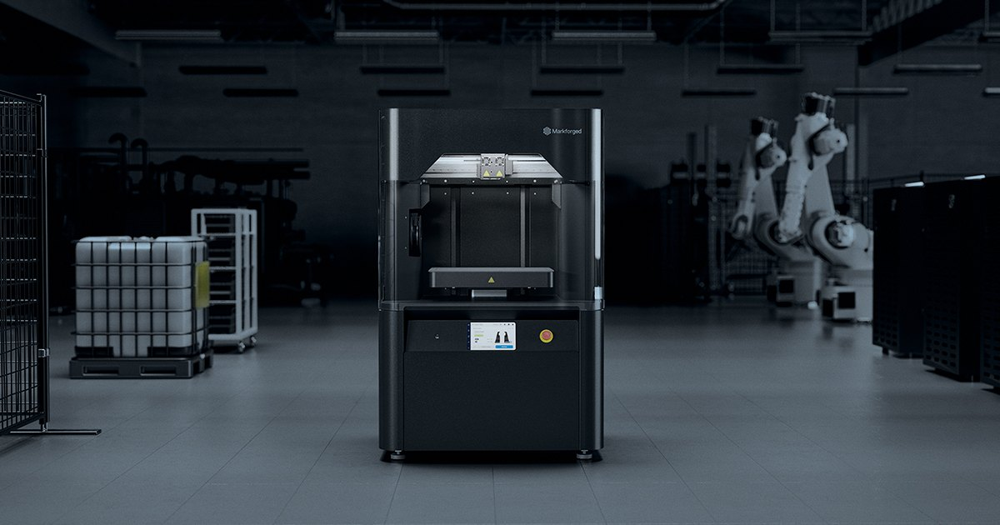
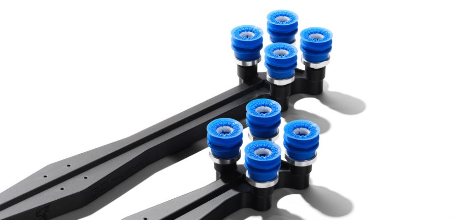
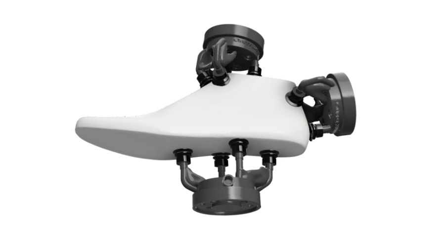
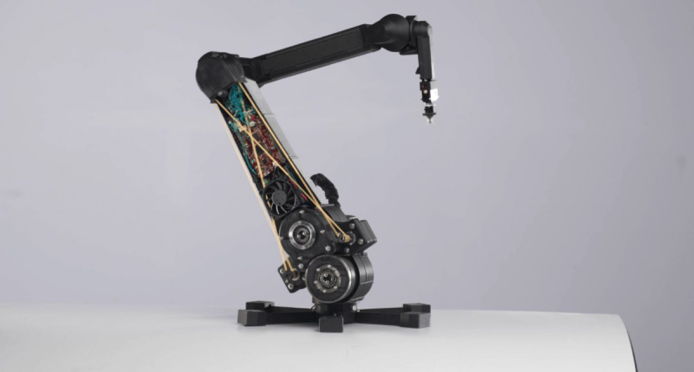

News & Insights

焦點正從算力移向實體化
三項事件分屬不同市場，指向同一個結構命題：當 Physical AI 從實驗室走向量產，決定其發展速度的不再只是模型與算力，而是製造端能否如期交付具備結構性能的實體。Markforged 大中華區暨越南區總經理陳中欣的職責範圍涵蓋台灣、中國、香港與越南，正好橫跨這條實體供應鏈的多個環節。
「AI 目前的蓬勃發展集中在軟體、晶片與算力。真正的致勝關鍵此刻正在發生，而未來最重要的一件事，是 AI 的實體化。」
陳中欣 · Markforged 大中華區暨越南區總經理
產業焦點的位移
投資集中於軟體與算力，實體化尚未形成對應的產業能力
過去三年，AI 領域的資本與人才高度集中於三個方向：模型與軟體框架、半導體製程與晶片架構、資料中心與算力基礎設施。三者的產業鏈已相對成熟，投資邏輯與評價方式也已建立。
Physical AI 的定義則要求另一種能力。當人工智慧的輸出必須以實體形式存在——機器人本體、機構件、末端執行器、感測器承載結構——其產出速度即受限於製造端的可製造性、迭代週期與供應鏈成熟度。這三項限制目前尚未獲得與軟體端相稱的產業投入。
限制一 · 可製造性
生成式設計輸出的幾何，多數超出減材製程的加工範圍
拓撲優化與生成式設計已進入量產工程流程。其演算結果的共同特徵，是以材料分布效率為目標所產生的非直覺幾何：連續曲面、內部點陣結構、封閉於零件內部的流道。這類幾何的力學效率來自於它並不遵循減材製造的成形邏輯。
減材製程存在刀具可及性的物理限制。當演算結果無法以既有製程成形，工程單位通常回退至可加工版本，於是設計效益在製程階段被折減。此一折減多數未被量化紀錄，亦未反映於 AI 導入的效益評估中。
對機器人應用而言，此一折減直接反映於性能。機構件質量經力臂放大後轉為驅動負載，並影響續航與定位精度。輕量化在此並非設計偏好，而是規格條件。


限制二 · 迭代週期
軟硬體迭代節奏不對稱，決定年度可驗證的技術路線數量
軟體迭代的邊際成本趨近於零，版本週期以日計。硬體則不然：機構件的每一次修改均需重新設計、重新發包、重新驗證，週期以週或月計。此一節奏差異在原型階段影響有限，進入場景驗證階段後則成為主要瓶頸。
以深圳方案設定的目標為例，2026 年底前需開放至少十個真實場景進入常態運行。每一個場景的環境條件不同，對應的機構調整即構成一輪硬體回饋。十個場景意味著至少十輪機構迭代，其總時程直接取決於實體件的交付週期。
美國機器人公司 Haddington Dynamics 的公開案例提供了量化參照。該公司將 Dexter 機械臂之多數結構件改以積層製造生產，零件數自 800 件降至 70 件以下，整機組裝時程縮短至一日內完成。該機械臂之運動精度要求為 50 微米。依原廠公開資料，設備導入後約三週即完成整機碳纖維結構之重新設計。
整機組裝縮短至一日內
整機碳纖維結構重新設計

限制三 · 供應鏈成熟度
樣機成熟度與量產成熟度屬於不同的工程問題
2026 世界機器人大會後，產業界普遍形成一項評估：人形機器人的硬體已趨成熟，後續瓶頸在於泛化能力不足。此一判斷在演算法層面成立，但在製造層面需要區分。
Markforged 的觀察是，目前達到成熟的是展示樣機，而非量產供應鏈。單台可由工程團隊以手工方式完成的機構，與年產萬台、須逐台維持運動精度並支援改款的機構，屬於兩種不同性質的工程問題：前者取決於設計與組裝能力，後者取決於供應鏈的一致性與反應速度。
深圳方案的技術攻關方向可作為對照。該方案將人形機器人本體與核心零部件自主化列為重點，其資源配置指向的是實體製造能力，而非模型能力。
區域產業定位
精密機械與工裝供應能力，是實體化最直接的產業基礎
2026 年 8 月，中華民國全國工業總會發布年度白皮書，主題為「轉折」。該白皮書調查 161 個產業公會，缺工以 76.6% 之關切度連續三年居首，產業轉型以 75.7% 居次，並建議政府檢討「重科技、輕傳產」之政策配置。
陳中欣認為，兩項數據與 Physical AI 的產業需求存在直接對應。實體化所需的能力——精密機械加工、結構件製造、工裝夾具供應、快速換線——正是區域內機械產業長期累積的基礎。就產業定位而言，機械業並非人工智慧的替代對象，而是 Physical AI 量產化過程中的必要環節。
他同時指出此一定位的前提條件：交付週期需自以週計縮短至以日計，非標準件供應需自外部委外轉為現場自主。前提未達成之前，機器人企業將轉向具備該能力的供應者。
就人力短缺而言，其解方亦不在人力供給端。當既有人力的單位產出需提升，前提是工裝與治具能於當日到位，而非排入外部產能佇列。
（工總 2026 白皮書，161 個公會）
居同一調查第二位
結語
實體化是目前 AI 產業最大的未解挑戰
「現階段的產業討論高度集中於 AI 輔助設計、協助設計及各類延伸應用。但真正最大的挑戰是 AI 實體化——把軟體變成硬體，把虛擬的東西變成實體。」陳中欣表示。
解決方向
將結構件供應能力配置於產線端
Markforged 之工業級積層製造系統以連續纖維複合材料為核心，供製造企業於生產現場自主生產具結構性能之機構件、治具夾具、末端執行器與產線輔具。FX10 與 FX20 定位於產線級應用，X7 與 X7 FE 定位於設計驗證與高頻迭代；FX10 可加裝 Metal Kit，於同一設備平台切換複合材料與金屬列印。
此一配置改變的並非單一零件的取得方式，而是設計變更與實體交付之間的時間差。當該時間差自以週計壓縮至以日計，硬體迭代週期方能與軟體週期對齊。
AI 實體化・製造新紀元 — VIP 專屬體驗日
由 Markforged 原廠工程師進行現場操作演示，並針對實際應用場景進行方案評估。場次可安排於台灣、中國、香港或越南，採邀請審核制。
申請 VIP 體驗名額 →資料來源
- 2026 台北國際自動化工業大展／TAIROS：2026 年 8 月 19 至 22 日，台北南港展覽館一、二館；886 家廠商、3,506 個攤位
- 2026 世界機器人大會：2026 年 8 月 19 至 23 日，北京亦莊；主題「人機共生，產需共融」
- 深圳市《推動智能機器人產業高質量發展工作方案（2026—2028 年）》，2026 年 9 月發布
- 中華民國全國工業總會《2026 工總白皮書》，2026 年 8 月發布；主題「轉折」，調查 161 個產業公會
- Haddington Dynamics 7-Axis Robotic Arm、Production End-of-Arm-Tooling、Harvestance Customized Cobot Gripper：Markforged 官方 Application Spotlight
← 回到 News & Insights · markforged.tw